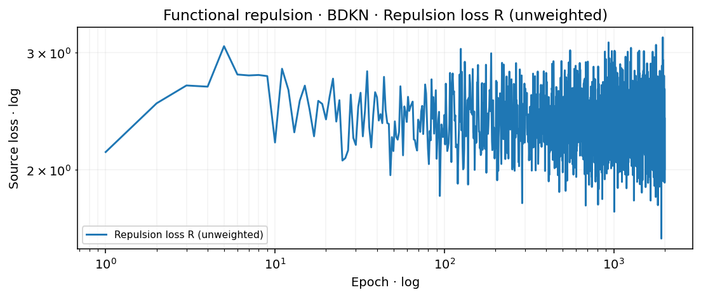
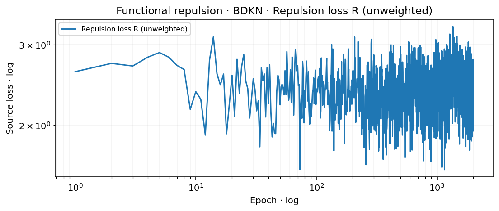
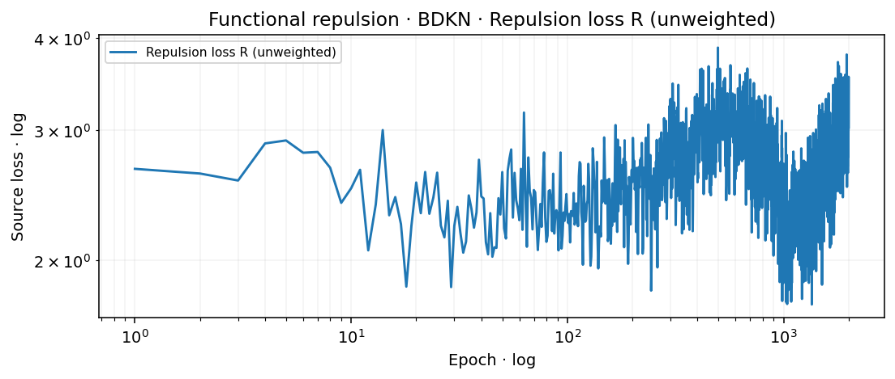
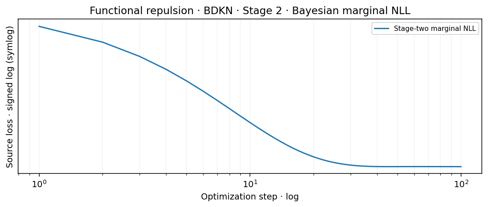
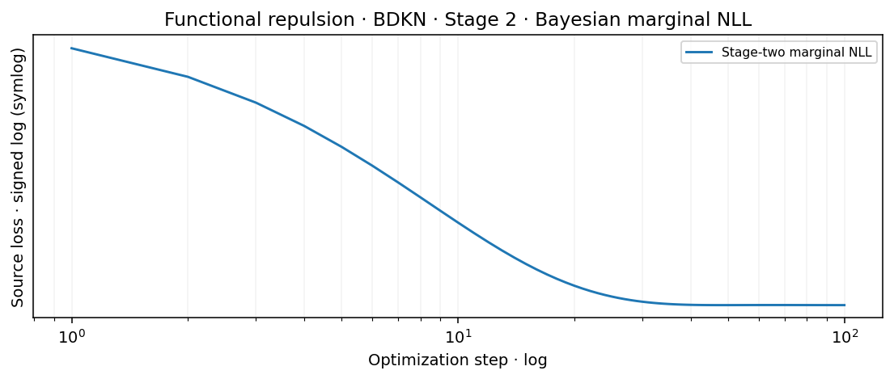
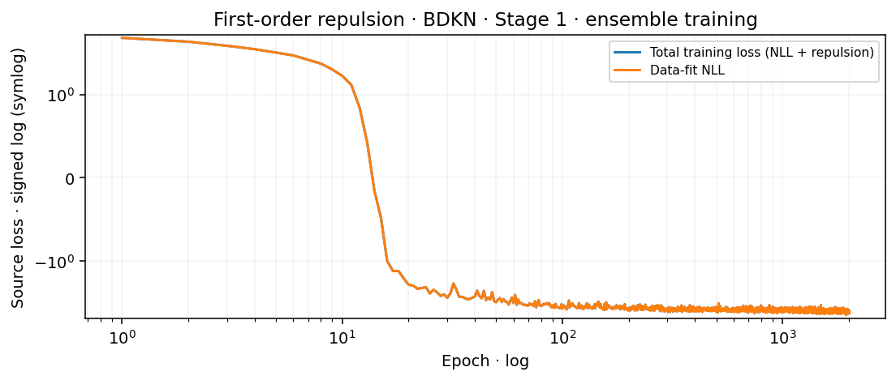
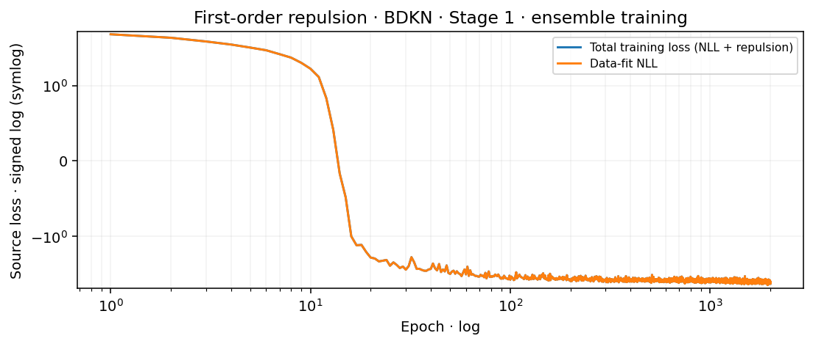
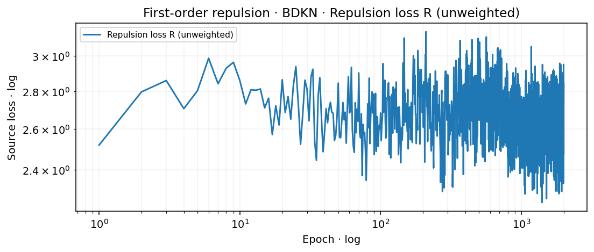
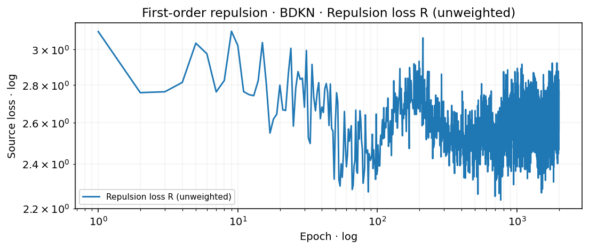
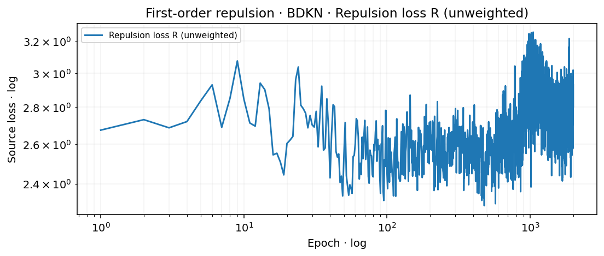

Regression comparison
Download resultsDataset
Training setting
Repulsion weight
Repulsion location
Compare repulsion locations
Method
Random points redraw every step and exclude all training inputs. Training and random use B points; combined uses 2B. Prediction axes match within each DE or BDKN row.
Functional repulsion
BetterWorse · relative rank within each column
DE
| Repulsion inputs | RMSE | NLL | Training seconds |
|---|---|---|---|
| Training | 0.16759 | -0.02104 | 24.30 |
| Random | 0.24809 | -0.24540 | 24.78 |
| Training + random | 0.27341 | -0.22856 | 25.01 |
BDKN
| Repulsion inputs | RMSE | NLL | Training seconds |
|---|---|---|---|
| Training | 0.17275 | 0.01759 | 24.44 |
| Random | 0.24806 | -0.24505 | 24.92 |
| Training + random | 0.26849 | -0.27293 | 25.15 |
Stage 1 · total loss and data fit
Repulsion loss R only

X: log · Y: log

X: log · Y: log

X: log · Y: log
Stage 2 · Bayesian marginal NLL

X: log · Y: signed log

X: log · Y: signed log
X: log · Y: signed log
First-order repulsion
BetterWorse · relative rank within each column
DE
| Repulsion inputs | RMSE | NLL | Training seconds |
|---|---|---|---|
| Training | 0.17111 | -0.08196 | 50.16 |
| Random | 0.25800 | -0.34985 | 49.21 |
| Training + random | 0.28764 | -0.26641 | 50.03 |
BDKN
| Repulsion inputs | RMSE | NLL | Training seconds |
|---|---|---|---|
| Training | 0.17524 | 0.00707 | 50.29 |
| Random | 0.27452 | -0.32597 | 49.34 |
| Training + random | 0.28038 | -0.29344 | 50.20 |
Stage 1 · total loss and data fit

X: log · Y: signed log

X: log · Y: signed log
X: log · Y: signed log
Repulsion loss R only

X: log · Y: log

X: log · Y: log

X: log · Y: log
Stage 2 · Bayesian marginal NLL
Weight repulsion · location-independent
The loss compares network parameters directly. These same results apply to every location.
| Stage | RMSE | NLL | Training seconds |
|---|---|---|---|
| DE | 3.33210 | 0.27129 | 19.05 |
| BDKN | 1.85786 | 0.03584 | 19.20 |